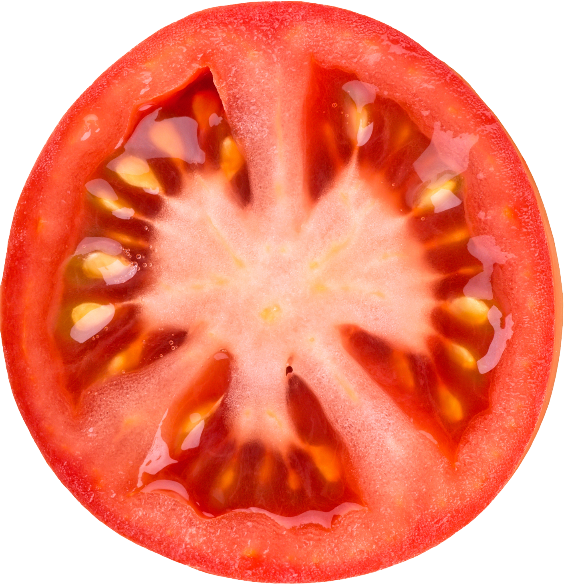
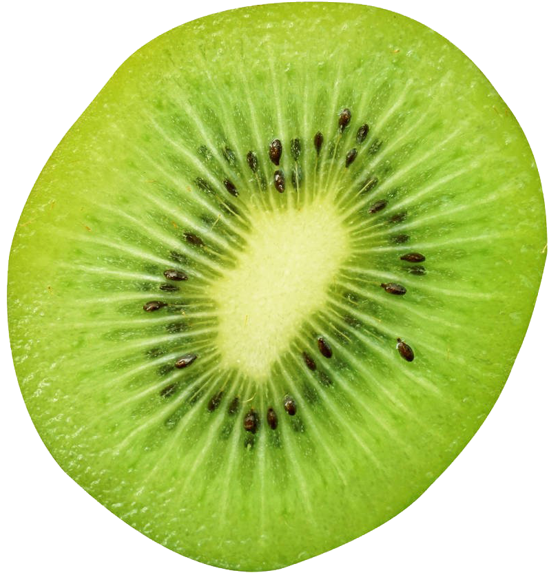

하루 한 번 배달 음식,
망가진 식습관을 가진 사람들에게
올바른 식습관
-

제때에
-

골고루
-

알맞게
최근 식생활의 서구화, 불규칙한 식사, 잦은 외식 등 잘못된 식생활로
뇌혈관질환, 심장병, 위암, 고혈압성질환, 당뇨병 등의 만성 퇴행성 질환이
나날이 증가하고 있습니다.
이러한 만성 퇴행성 질환은 식습관의
불균형으로 생긴 것이므로 식생활의 개선을 통해서만 나아질 수 있습니다.